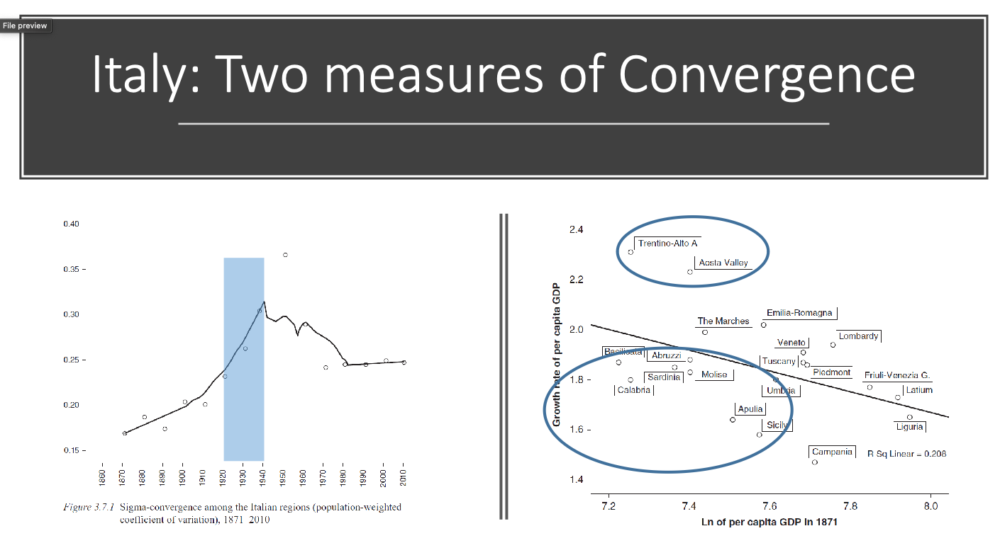
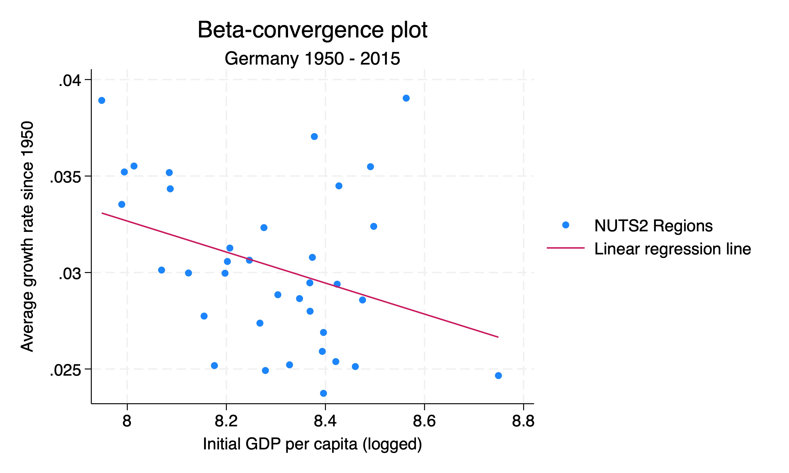
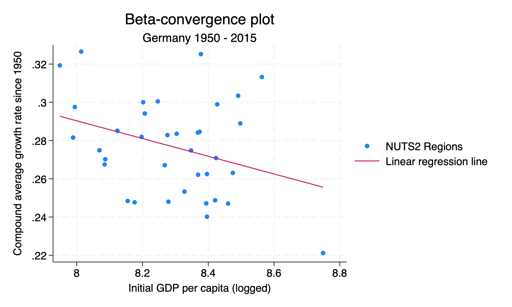
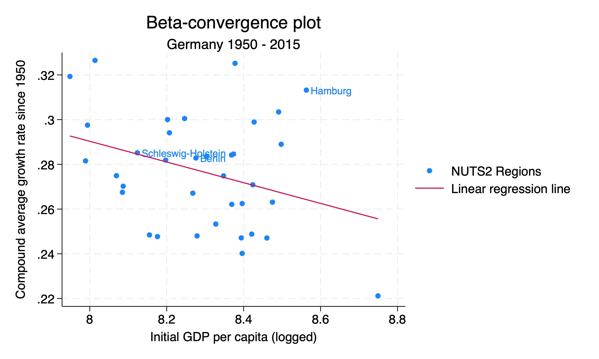

clear all
set more off
# Set your own directory here
cd "/Users/jonathanjayes/Downloads/Lab-1/"
# Read in the data
use regional_dataset, clearBeta-convergence
In your lectures you have seen that within a country, the poorer regions tend to grow faster than the richer regions. This is known as beta-convergence, or sometimes the “catch-up effect”.

In this exercise, we will look at the data and see if we can find evidence of beta-convergence Germany since 1950. (Technically, we are looking at unconditional beta-convergence, as distinct from conditional beta-convergence, which holds the investment rate and the population growth rate constant).
You can download the do-file for this exercise here.
Setup
First we need to set our working directory and load the data we will be using. We will use the Roses and Wolf dataset that you have used in the previous labs and exercises.
Calculating growth rates
We will start by calculating the growth rates of the GDP per capita (in levels) for each region in Germany for each time period in our dataset.
There are a few ways to calculate growth rates. I choose to show two: the method suggested in Roses and Wolf (2018) - the average growth rate method - and the compound annual growth rate (CAGR) method.
In Chapter 2: Regional Economic Development in Europe, 1900-2010, A description of the patterns your textbook reads: “The general approach is to regress the average annual growth rate in GDP per capita of a region over some period on the level of GDP per capita at the beginning of the period (in logs)” (p. 22).
We do this by taking the variable GDP per capita in 1990 dollars and then calculating the growth rate by taking the difference between GDP per capita in year t and GDP per capita in year t-1, dividing by GDP per capita in year t-1, and then multiplying by the difference in years to get an annual growth rate in each period.
We will then calculate the average growth rate by taking the mean of the growth rates for each region.
# Step 1: generate log GDP per capita variable for use later
gen log_gdp_pc = log(regional_gdp_cap_1990)
keep if country == "Germany"
# Step 2: calculate the growth in GDP per capita from 1950 onwards
keep if year >= 1950
# xtset tells Stata we will do time series operations
xtset _ID year
# Generate the growth rate by taking the difference between GDP per capita in year t and GDP per capita in year t-1, dividing by GDP per capita in year t-1, and then multiplying by the difference in years to get an annual growth rate in each period.
bysort _ID (year): gen growth_regional_gdp_cap_1990 = (regional_gdp_cap_1990[_n]-regional_gdp_cap_1990[_n-1]) / (regional_gdp_cap_1990[_n-1] * (year - year[_n-1]))
# Take the mean of the growth rates for each region
bysort _ID: egen mean_growth_rate = mean(growth_regional_gdp_cap_1990)
# Step 3: save the GDP per capita from 1950
keep if year == 1950Beta-convergence plot
Here we draw a scatterplot with the mean growth rate on the y-axis and the initial GDP per capita (logged) on the x-axis. We also add a linear regression line to the graph.
We use the twoway command to draw the graph. The scatter option tells Stata to draw a scatter plot, and the lfit option tells Stata to draw a linear regression line. We also add a title and subtitle to the graph, and label the axes.
# Then draw the graph with a scatter plot and a linear regression line.
twoway (scatter mean_growth_rate log_gdp_pc) ///
(lfit mean_growth_rate log_gdp_pc, legend(label(1 "NUTS2 Regions") label(2 "Linear regression line"))) ///
, title("Beta-convergence plot") subtitle("Germany 1950 - 2015") ytitle("Average growth rate since 1950") ///
xtitle("Initial GDP per capita (logged)")
Beta-convergence graph with labels
We can also add labels to the points in the graph. We do this by adding the mlabel option to the scatter command. This can help us identify which regions of interest are which.
gen region_labels = region if region == "Berlin" | region == "Schleswig-Holstein" | region == "Hamburg"
# Then draw the graph with two lines through out scatter points. Label the points
twoway (scatter mean_growth_rate log_gdp_pc, mlabel(region_labels)) ///
(lfit mean_growth_rate log_gdp_pc, legend(label(1 "NUTS2 Regions") label(2 "Linear regression line"))) ///
, title("Beta-convergence plot") subtitle("Germany 1950 - 2015") ytitle("Average growth rate since 1950") ///
xtitle("Initial GDP per capita (logged)")
Compound annual growth rate method
We can also calculate the growth rates using the compound annual growth rate (CAGR) method. This is a common method for calculating growth rates.
The formula for the compound annual growth rate is:
\[CAGR = \left(\frac{V_f}{V_i}\right)^{\frac{1}{n}} - 1\]
Where \(V_f\) is the final value, \(V_i\) is the initial value, and \(n\) is the number of periods.
Here we calculate the CAGR for each region in Germany:
We start by keeping only the data for Germany and the years 1950 and 2015. We then reshape the data to make it wide. This creates two new variables, log_gdp_pc1950 and log_gdp_pc2015, which we use to calculate the CAGR for each region. We then calculate the CAGR for each region and scale it to percentage for a more sensible y-axis in the plot below.
# Read in the data
use regional_dataset, clear
# Step 1: generate log GDP per capita variable
gen log_gdp_pc = log(regional_gdp_cap_1990)
# Step 2: calculate the growth in GDP per capita from 1950 onwards
keep if country == "Germany"
keep if year == 1950 | year == 2015
keep region year log_gdp_pc _ID
# Make data wide so that we can
reshape wide log_gdp_pc, i(_ID) j(year)
generate cagr = (exp(log(log_gdp_pc2015/log_gdp_pc1950)/65)) - 1
# Step 3: scale to percentage for a more sensible y-axis in plot below
replace cagr = cagr * 100Beta-convergence plot with CAGR
We can now draw a scatterplot with the CAGR on the y-axis and the initial GDP per capita (logged) on the x-axis. We also add a linear regression line to the graph.

Again we can add labels to the points in the graph. We do this by adding the mlabel option to the scatter command. This can help us identify which regions of interest are which.

Which method to use to calculate growth rates?
The two methods give us slightly different results, but the overall pattern is the same. The CAGR method is more commonly used, but the average growth rate method is also valid. The CAGR method is more sensitive to the start and end years, so it is important to choose the start and end years carefully.